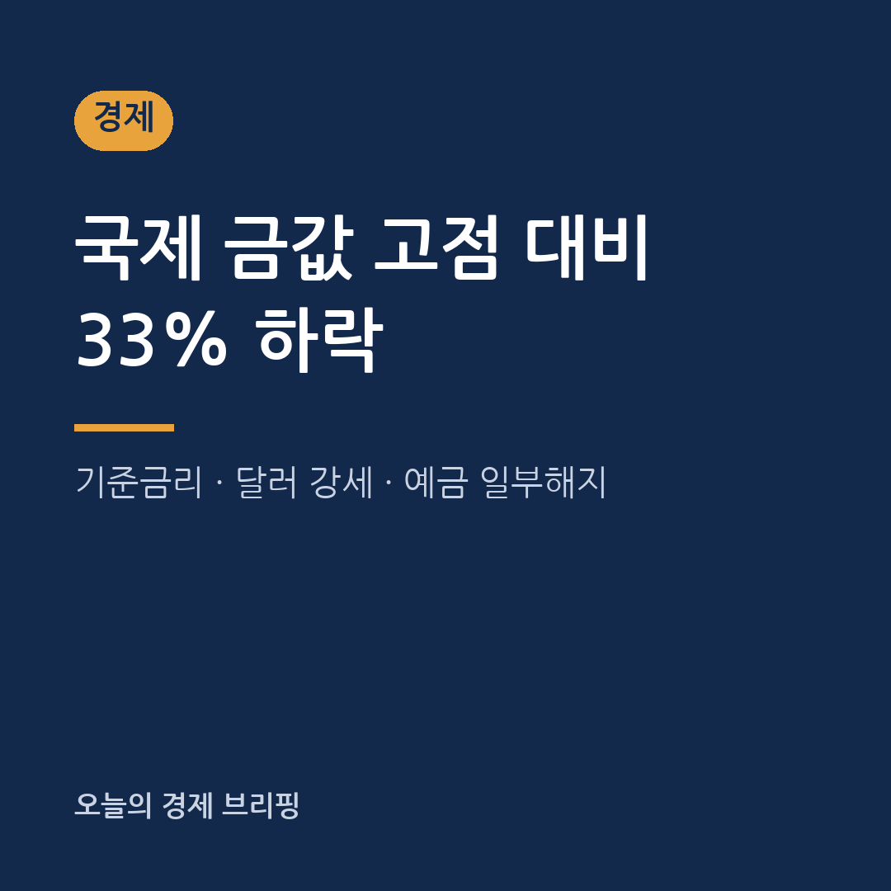
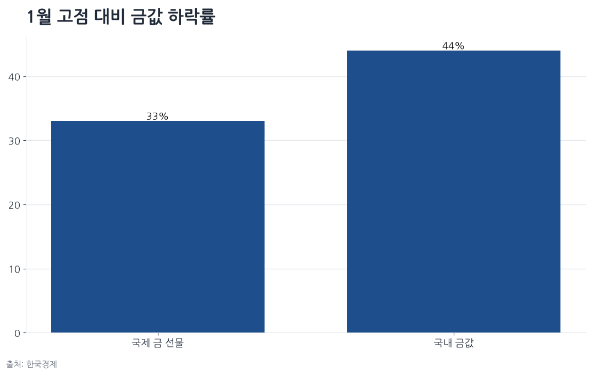

2026-11-28-1433-tistory 발행 키트 · 이 페이지는 검색에 노출되지 않습니다.
제목
카테고리
경제태그
본문 (그림·표 포함)
휴대폰 블로그 앱에서는 그림이 같이 붙지 않을 수 있어요. 그때는 [글자만 복사] 후 아래 이미지를 저장해 [그래프1]·[표1] 자리에 첨부하세요.
핵심 요약: 국제 금 선물 가격이 올해 1월 고점 대비 약 33% 내렸고, 국내 금값은 44% 내렸습니다. 보도는 글로벌 금리 인상 기조와 달러 강세를 원인으로 짚었습니다. 한편 급전이 필요할 때 예금 전체를 해지하지 않고 필요한 금액만 해지하는 방법도 소개합니다.

▶ 배경: 금리 인상 국면과 금
한국경제 보도에 따르면 세계 주요국의 기준금리(중앙은행이 정하는 정책금리) 인상 기조가 이어지고 있고, 달러도 강세입니다. 내년에도 주요국이 금리를 올릴 것이라는 전망이 시장에 퍼져 있다고 합니다.
금은 이자나 배당이 없는 자산입니다. 예금·채권 금리가 높아질수록 보유 매력이 상대적으로 낮아지는 구조입니다. 또한 금 가격은 달러로 표시되므로 달러가 강해지면 다른 통화권 투자자에게 부담이 됩니다.
▶ 핵심 내용: 가격 흐름
뉴욕상품거래소(NYMEX) 기준 국제 금 선물은 1월 29일 온스당 5,318.4달러로 고점을 기록했습니다. 11월 20일에는 3,502.9달러까지 내려갔고, 11월 24일에는 3,561.9달러에 거래됐습니다.
NYMEX 국제 금 선물 가격 추이
| 기준일 | 온스당 가격(달러) | 비고 |
|---|---|---|
| 1월 29일 | 5,318.4 | 올해 고점 |
| 11월 20일 | 3,502.9 | 고점 대비 약 33% 하락 |
| 11월 24일 | 3,561.9 | 당시 거래 가격 |
출처: 한국경제
보도가 제시한 하락률은 국제 가격 기준 약 33%, 국내 금값 기준 44%입니다. 국내 가격의 낙폭이 더 컸다는 점이 눈에 띕니다.

▶ 영향: 안전자산의 의미 재확인
금은 대표적인 안전자산으로 불려 왔지만, 금리와 환율 환경에 따라 큰 폭으로 하락할 수 있다는 점이 이번 흐름에서 확인됩니다. 안전자산이라는 분류가 가격 하락이 없다는 의미는 아닙니다.
이 글은 매수·매도를 권하는 글이 아닙니다. 보유 자산의 구성과 금리 변화에 대한 민감도를 점검하는 참고 자료로 활용하시기 바랍니다.
▶ 함께 알아 둘 정보: 예금 일부해지
매일경제가 소개한 사례는 다음과 같습니다. 연 3% 금리의 1년 만기 정기예금에 5,000만 원을 예치한 가입자가 6개월 시점에 500만 원이 급히 필요해진 경우입니다.
이때 예금 전체를 해지하는 대신 필요한 금액만 해지하는 일부해지 서비스를 이용하면, 남은 잔액에는 가입 당시의 금리가 그대로 적용됩니다. 이자 손실을 줄일 수 있다는 것이 핵심입니다.
예금 해지 방식 비교
| 항목 | 전액 해지 | 일부해지 |
|---|---|---|
| 해지 범위 | 예치금 전액 | 필요한 금액만 |
| 잔액 처리 | 남는 잔액 없음 | 기존 금리 그대로 적용 |
| 사례(5,000만 원 예치) | 500만 원이 필요해도 전액 정리 | 500만 원만 해지, 나머지 유지 |
출처: 매일경제
▶ 확인할 점
일부해지 가능 여부와 세부 조건은 상품과 금융사에 따라 다를 수 있습니다. 해지 전에 가입한 금융사의 앱이나 창구에서 해당 상품이 지원하는지 확인해야 합니다.
금값 쪽에서는 이후 금리 인상 속도와 달러 흐름에 대한 발표를 계속 살펴볼 필요가 있습니다.
▶ 정리
1. 국제 금 선물은 1월 고점 대비 약 33%, 국내 금값은 44% 하락했습니다.
2. 보도가 지목한 원인은 글로벌 금리 인상 기조와 달러 강세입니다.
3. 급전이 필요하면 예금 전체 대신 일부해지로 남은 금액의 기존 금리를 지킬 수 있는지 확인하십시오.
이미지 (개별 복사·저장)
출처 (본문 맨 아래에 붙여넣기 권장)
- 한국경제, '안전자산' 금의 배신…금리 인상 공포에 고점 대비 33% 급락, https://www.hankyung.com/article/202611262188i - 매일경제, “눈물 머금고 예금 깼는데 괜히 머금었습니다”…이자 손해 줄이는 방법, https://www.mk.co.kr/news/economy/12220684